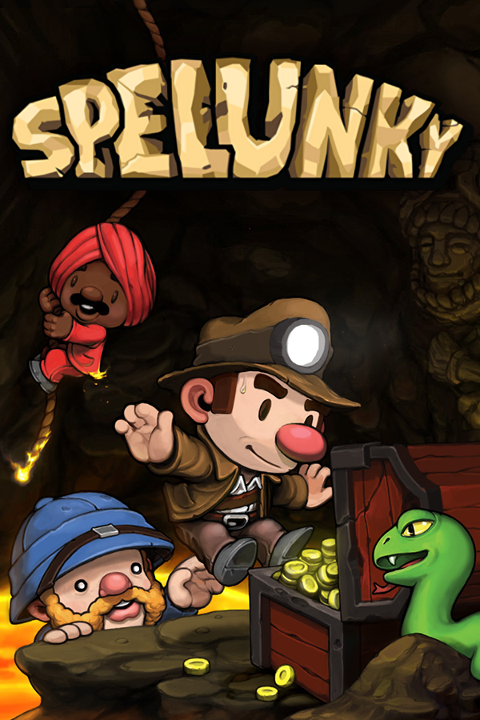

Spelunky
Spelunky
Detalhes
|  | |
| Tempo de jogo | Não Jogado |
| Última Atividade | Nunca |
| Adicionado | 09/03/2025 22:47:31 |
| Modificado | 10/03/2025 0:28:34 |
| Status de Conclusão | Not Played |
| Biblioteca | Gog |
| Fonte | GOG |
| Plataforma | PC (Windows) |
| Data de Lançamento | 21/12/2008 |
| Pontuação da Comunidade | 87 |
| Avaliação da crítica | 87 |
| Pontuação do Usuário | |
| Gênero | Platform Roguelike |
| Desenvolvedor | Mossmouth |
| Editor | Microsoft Studios Mossmouth |
| Funções | Multiplayer Single Player |
| Links | Wikipedia |
| Tag | [EMT] Video Micro missing |
Descrição
Spelunky is a 2008 platform video game created by independent developer Derek Yu and released as source-available freeware for Microsoft Windows. It was remade for the Xbox 360 in 2012, with ports of the new version following for various platforms, including back to Microsoft Windows. The player controls a spelunker who explores a series of caves while collecting treasure, saving damsels, fighting enemies, and dodging traps. The caves are procedurally generated, making each run-through of the game unique.
The first public release was on December 21, 2008. The source code of the Windows version was released on December 25, 2009. An enhanced version for Xbox Live Arcade was released on July 4, 2012. The enhanced version was later released for Windows and PlayStation 3 in August 2013, and for PlayStation 4 in October 2014. The remake was also made available on Xbox One via backward compatibility in December 2015. A fanmade, ChromeOS version of the original game was made as well, titled Spelunky HTML5. A port for Nintendo Switch was released on August 26, 2021. A sequel, Spelunky 2, was released in September 2020.
Spelunky was one of the first games to borrow concepts from roguelikes and combine them with real-time side-scrolling platformer elements. Due to its popularity, it was the influence for many later "roguelite" games. Spelunky received critical acclaim for its gameplay, atmosphere and design, though some controls and multiplayer elements polarized critics. Many critics and publications regarded it as one of the greatest video games of all time.